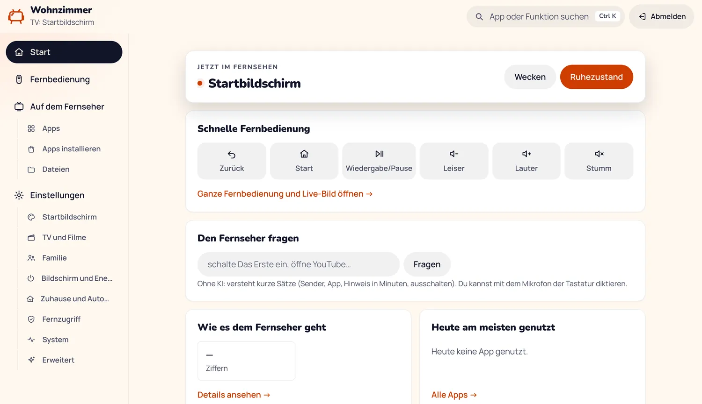
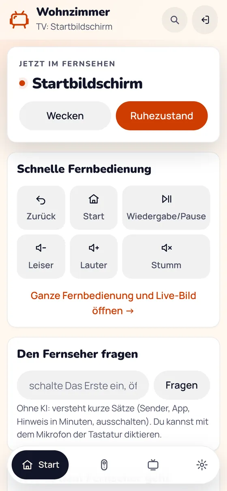
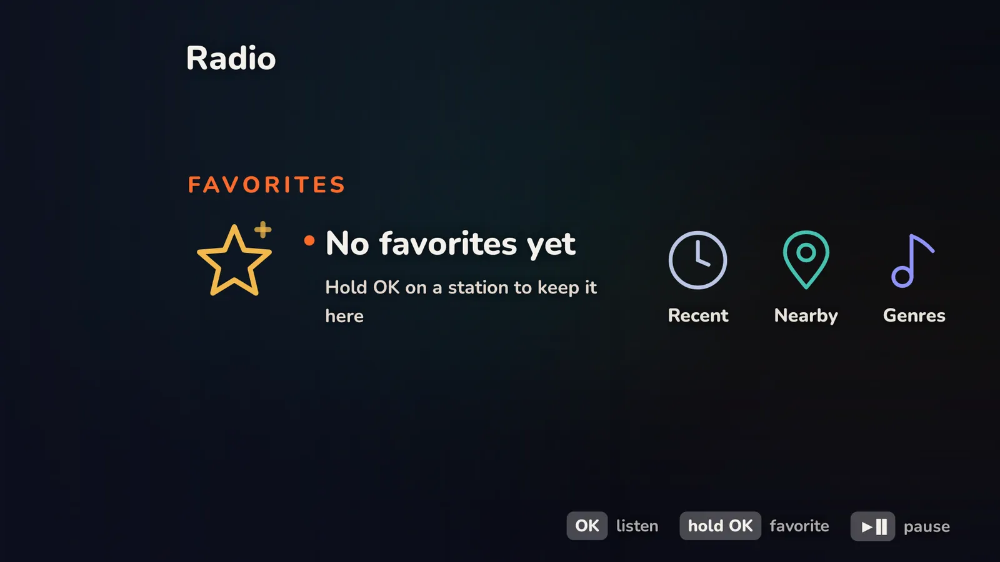
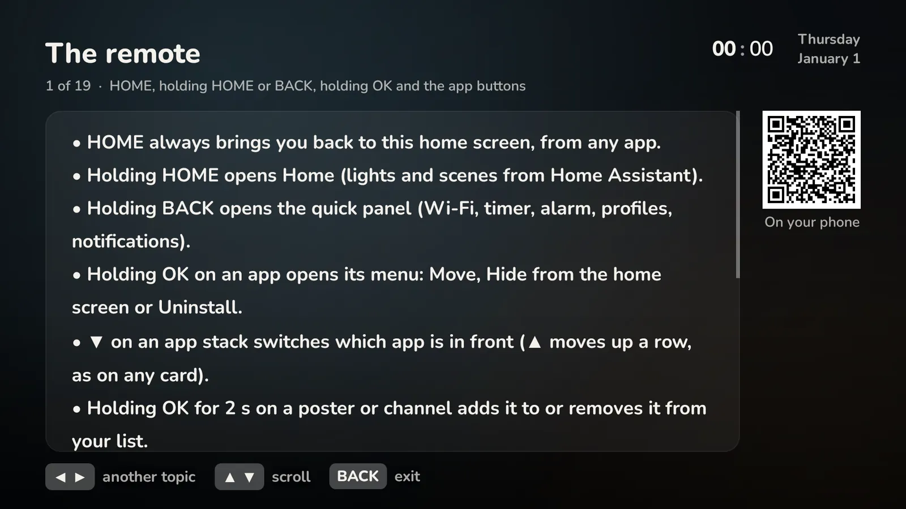

Dein Fernseher, wieder einfach. Alles an seinem Platz, wie ein aufgeräumtes Wohnzimmer.
Gemacht für alle, die sich einfach aufs Sofa legen und fernsehen wollen. Sofaly ersetzt den Startbildschirm, nicht Ihren Fernseher: Google bleibt, keine Werbung, und alles an einem Ort.
Ein Kreuz, fünf Welten
Weiter, Ansehen, Hören, Spielen und Apps. Zwei Klicks zu allem.
Keinerlei Werbung
Nicht einmal im Gratis-Tarif, kein einziger gesponserter Platz. Kein Tracking verlässt Ihr Zuhause.
Schnell auf einfachen Fernsehern
Gemessen auf einem 32-Bit-Chromecast: Die Animation passt sich an, was das Gerät schafft.
Für das ganze Zuhause gemacht
Auch für Großeltern
Große Schrift, ein einfacher Modus, der den App-Namen ansagt, hoher Kontrast und Bildschirmleser. In 15 Sprachen.
Wacht mit dir auf
Der Wecker schaltet den Fernseher selbst ein, erhöht langsam die Lautstärke und öffnet Guten Morgen: Uhrzeit, Wetter und Termine.
Kümmert sich ums Zuhause
Licht, Szenen und Türklingel von Home Assistant auf dem Fernseher. Schläft ein, wenn alle weg sind.
Spricht mit dem Handy
Steuern, tippen und Nachrichten senden vom Handy oder Computer im Haus, per PIN geschützt.
Wetter, das stimmt
Das aktuelle Wetter kommt vom nächsten Flughafen: gemessen, nicht geraten. 9-Tage-Vorhersage mit einem OK.
Pflegt sich selbst
Verschlüsseltes Backup jede Nacht, Wartung während du schläfst und eine Diagnose, die erklärt, was schiefging.
Der Fernseher auch auf Handy und Computer.
Browser im selben Netz öffnen, PIN eingeben, fertig: Fernbedienung, Tippen mit Umlauten, das Fernsehbild live, Notizen und Einstellungen. Nichts installieren, kein Konto.


- Panel auf Handy und ComputerFernbedienung, Tippen mit Umlauten, Live-Bild des Fernsehers, Bildschirmschoner-Fotos, Pinnwand und Backups, im Browser jedes Geräts zu Hause.
- Den Fernseher bittenTippe oder sag „öffne YouTube“, „erinnere mich in 7 Minuten“, „schalte in 30 Minuten aus“, und der Fernseher macht es.
- Vom Handy teilenAls App installiert erscheint das Panel unter Teilen: Ein YouTube-Video oder Link öffnet sich auf dem Fernseher, ein Text wird zur Nachricht.
- Verknüpfung unter WindowsDer Fernseher erscheint unter Netzwerk im Explorer mit einer Verknüpfung zum Panel, auch wenn sich die IP ändert.
- Der Fernseher als NetzlaufwerkDateien per Ziehen auf den Fernseher kopieren: Unter Windows erscheint er in Dieser PC wie ein Handy; auf Mac, Linux und Handys per sicherem WebDAV.
- Mehrere ZuhauseKümmere dich um den Fernseher bei dir und bei deinen Eltern vom selben Handy.
Echte Panel-Bildschirme mit Beispieldaten.
122 Dinge, die Ihr Fernseher jetzt kann. In 12 Welten geordnet, so wie das Kreuz den Bildschirm ordnet.
- Das KreuzEin aufgeräumter Bildschirm, den jeder versteht und der sich nach dir richtet.19
- AnsehenDeine Filme, deine Serien und ein Heimkino-Player.14
- HörenRadio und Podcasts mit derselben Sorgfalt wie Video.5
- SpielenAlle Spiele an einem Ort, bereit für den Controller.6
- AppsDeine Apps in einer sinnvollen Reihenfolge.3
- Das ZuhauseWecker, Timer, Automationen und das vernetzte Zuhause.13
- Wetter und BildschirmschonerDas richtige Wetter und ein Bildschirmschoner, den man gern laufen lässt.15
- FamilieEin Profil für jeden, Schutz für Kinder und ein herzlicher Empfang für Gäste.12
- Handy und ComputerDer Fernseher spricht mit den Geräten im Haus.11
- Pflegt sich selbstBackup, Wartung und Diagnose, ohne dass du daran denken musst.13
- Für alleGemacht für Menschen, die anders sehen, hören oder die Fernbedienung anders nutzen.5
- DatenschutzKeine Werbung, kein Tracking, eine PIN, wo es zählt.6
Das Kreuz
Ein aufgeräumter Bildschirm, den jeder versteht und der sich nach dir richtet.

Das Kreuz
Weiter, Ansehen, Hören, Spielen und Apps in einer Reihe. Die gewählte Welt wird groß, ihr Inhalt direkt darunter.
Weiter
Ein Ort, um zurückzukehren: die Folge, der Sender, der Podcast oder die letzte App.
Obere Leiste
Suche, Sprache, das Wetter in einer Zeile und die Uhrzeit, immer am selben Platz. Beim Navigieren klappt sie ein, damit der Bildschirm atmen kann.
Das Kreuz
Weiter, Ansehen, Hören, Spielen und Apps in einer Reihe. Die gewählte Welt wird groß, ihr Inhalt direkt darunter.
Wo: ◀ ▶ wechseln die Welt, ▲ ▼ gehen durch die Spalte, OK öffnet.Weiter
Ein Ort, um zurückzukehren: die Folge, der Sender, der Podcast oder die letzte App.
Wo: Das erste Element im Kreuz.Obere Leiste
Suche, Sprache, das Wetter in einer Zeile und die Uhrzeit, immer am selben Platz. Beim Navigieren klappt sie ein, damit der Bildschirm atmen kann.
Wo: Mit ▲ hinauf.Google funktioniert weiter
Google Assistant, Gemini, die Suche und dein Google-Konto funktionieren wie vorher. Sofaly ändert den Startbildschirm, nicht deinen Fernseher.
Wo: Nutze die Mikrofontaste wie immer.Schnellmenü
WLAN, Bluetooth, Schlaf-Timer, Tonausgabe, Wecker, Profile, Benachrichtigungen und Einkaufsliste, aus jeder App.
Wo: ZURÜCK gedrückt halten.Deine Fernbedienung, deine Regeln
HOME führt immer zu Sofaly. ZURÜCK halten öffnet das Schnellmenü, HOME halten öffnet das Zuhause, OK auf einer App halten öffnet ihr Menü.
Wo: Ein Tastentester zeigt jede empfangene Taste.Läuft gerade
Eine Pille oben mit Cover und Titel. OK pausiert oder spielt weiter, OK halten öffnet die App.
Wo: Unter Startbildschirm › Weitere Optionen einschalten.Designs und Hintergründe
Dunkel, mit dem Bild des Fokus. Galerie, mit einem Gemälde aus dem Met pro Tag. Himmel, mit Satellit und Karte. Oder dein eigener Hintergrund, Foto oder Video. Auch Plugin-Hintergründe gehen, etwa die Luftaufnahmen von Overflight.
Wo: Dunkel, Galerie und Himmel in Basis; die übrigen in Pro.Symbole nach WunschPro
Nutze ein Symbolpaket aus Play oder ändere das Symbol einzelner Apps.
Wo: OK auf der App halten › Symbol ändern.Animation passend zu deinem Fernseher
Starke Geräte animieren alles; einfachere nur das Gewählte und schalten selbst zurück, wenn Bilder ruckeln.
Wo: Einstellungen › Darstellung.MondphasePro
Der Mond von heute und wie viel davon beleuchtet ist, auf dem Fernseher selbst berechnet, ohne Internet.
Wo: In der Vorhersage, im Bildschirmschoner und nachts am Wettersymbol. Einstellungen › Darstellung.CountdownPro
Wie viele Tage bis zu einem Datum Ihrer Wahl bleiben, oder bis zum nächsten Feiertag.
Wo: In der Pille oben am Bildschirm. Einstellungen › Darstellung.Haus-ErinnerungPro
Ein Hinweis, der an den gewählten Wochentagen wiederkommt: Wertstofftag, Medikament, Kurs.
Wo: In der Pille oben am Bildschirm. Einstellungen › Darstellung.Status Ihres DienstesPro
Der Fernseher prüft eine Adresse Ihrer Wahl und zeigt, ob sie erreichbar ist: der Heimserver, die Website des Ladens.
Wo: In der Pille oben am Bildschirm. Einstellungen › Darstellung.Kurse des TagesPro
Währungen, Bitcoin und Ether zum Tageswert, aus offenen amtlichen Quellen.
Wo: Neben dem Wetter, in der oberen Leiste. Einstellungen › Darstellung.Nächstes Spiel Ihres TeamsPro
Wann und gegen wen Ihr Team als Nächstes spielt, auf einer Karte im Startbildschirm.
Wo: Im Eintrag TV des Kreuzes. Einstellungen › Darstellung.Karten anderer AppsPro
Neben den Karten von Sofaly legen Partner-Apps ihre eigene auf den Startbildschirm: die Lieferung, der Bus, der Hinweis der Hausverwaltung.
Wo: Karten erscheinen am Ende von Ansehen.Die Insel oben auf dem Bildschirm
Hinweise wechseln sich in einer Pille oben ab: kein Internet, Erinnerung, Kalender und Wecker. Wichtiges wächst 5 Sekunden lang mit „▲ zum Öffnen“, die Klingel des Zuhauses erscheint sofort, und beim Einschalten kommt eine Zusammenfassung des Geschehenen. ▲ oben am Kreuz gedrückt halten öffnet die Zentrale.
Wo: Startbildschirm, oben.Der richtige Vorschlag zur richtigen Zeit
Ohne künstliche Intelligenz: Aus der Nutzung der Woche schlägt der Fernseher vor, was zu dieser Uhrzeit passt.
Wo: Startbildschirm.
Ansehen
Deine Filme, deine Serien und ein Heimkino-Player.

Vom Computer
Videos, Musik und Fotos von Plex, Jellyfin, Emby, PC- oder NAS-Ordnern (SMB, WebDAV, FTP, SFTP, NFS), OneDrive, Dropbox, Box, Google Drive, UPnP und USB-Sticks.
Ein Player, der alles spielt
Dolby (AC3, E-AC3), DTS und TrueHD sowie Untertitel von Blu-ray, DVD und Anime, ohne Kodi oder VLC.
Weiter, wo du warst
Filme und Folgen setzen an der richtigen Stelle fort. Die nächste Folge startet nach 10 Sekunden, nach 3 am Stück fragt der Fernseher, ob du noch schaust.
Vom Computer
Videos, Musik und Fotos von Plex, Jellyfin, Emby, PC- oder NAS-Ordnern (SMB, WebDAV, FTP, SFTP, NFS), OneDrive, Dropbox, Box, Google Drive, UPnP und USB-Sticks.
Wo: Laufende Server und USB-Sticks erscheinen von selbst; der Rest über Hinzufügen.Ein Player, der alles spielt
Dolby (AC3, E-AC3), DTS und TrueHD sowie Untertitel von Blu-ray, DVD und Anime, ohne Kodi oder VLC.
Wo: ▼ während des Videos für Ton, Untertitel und deren Größe.Weiter, wo du warst
Filme und Folgen setzen an der richtigen Stelle fort. Die nächste Folge startet nach 10 Sekunden, nach 3 am Stück fragt der Fernseher, ob du noch schaust.
Wo: Läuft von selbst.Intro überspringen
Ist das Intro bekannt, erscheint „Intro überspringen · OK“. Du kannst es auch einmal markieren, der Fernseher merkt es sich.
Wo: Ab Werk an.Bevorzugter Ton und Untertitel
Original mit Untertiteln oder synchronisiert, einmal gewählt und pro Titel gemerkt. Untertitel aus dem Internet, wenn die Datei keine hat.
Wo: TV und Filme › Ton und Untertitel.Filme ohne Ruckeln
Der Fernseher schaltet beim Film auf 24 Hz, Kameraschwenks bleiben flüssig.
Wo: Schaltet sich mit dem Film ein; das Bild wird eine Sekunde schwarz.Besser sehen und hören
Untertitel auf schwarzem Grund oder gelb, „Klarere Stimme“ für Dialoge und „Gleichmäßige Lautstärke“, die Lautes bremst und Leises anhebt.
Wo: Im ▼-Menü des Players.Automatische UntertitelUltra
Gibt es keine Untertitel in deiner Sprache, übersetzt der Fernseher die vorhandenen.
Wo: Im Untertitelmenü wählen.Vollständige FilmseitenUltra
Poster, Bewertung, Besetzung, Trailer, Altersfreigabe und die Filmreihe auf einer schönen Seite in großer Schrift. Mit „Wer ist dieser Schauspieler?“: Foto, Rolle und weitere Werke.
Wo: OK auf einem Film oder einer Serie.Deine Trakt- und Simkl-ListenPro
Was du sehen willst und was du gesehen hast, synchron mit deinem Konto und deinen anderen Geräten.
Wo: Anmeldung per QR unter TV und Filme › Dienste.Eine Suche für alles
Findet Filme, Serien, Sender und Apps auf einmal und führt dieselbe Suche bei YouTube, Netflix oder Prime Video fort.
Wo: In der oberen Leiste oder per Sprache.Zwei Untertitel gleichzeitig
Zum Beispiel Deutsch unten und das Original oben, zum Lernen oder um gemeinsam zu schauen.
Wo: Player-Menü ▼ › Untertitel.Lautere Dialoge
Wenn 5.1-Ton zu Stereo wird, bleibt die Sprache vorn und Explosionen übertönen keine Stimmen.
Wo: Player-Menü ▼.Keine Spoiler und Zweitsprache
Die Zusammenfassung einer ungesehenen Folge bleibt verborgen. Kein Ton oder Untertitel in Ihrer Sprache? Dann kommt die gewählte Zweitsprache.
Wo: TV und Filme › Ton und Untertitel.
Hören
Radio und Podcasts mit derselben Sorgfalt wie Video.

Radio aus aller Welt
Tausende offene Sender, nach Name, Land oder Genre, mit Favoriten und zuletzt gehörten.
Podcasts
Per Name abonnieren, auf dem Fernseher hören und die Folge dort fortsetzen, wo du warst.
Podcasts entdecken
Durchsuche den ganzen offenen Podcast-Katalog und sieh, was in deinem Land im Trend ist.
Radio aus aller Welt
Tausende offene Sender, nach Name, Land oder Genre, mit Favoriten und zuletzt gehörten.
Wo: Hören › Radio.Podcasts
Per Name abonnieren, auf dem Fernseher hören und die Folge dort fortsetzen, wo du warst.
Wo: Hören › Podcasts.Podcasts entdeckenPro
Durchsuche den ganzen offenen Podcast-Katalog und sieh, was in deinem Land im Trend ist.
Wo: Hören › Podcasts › Suchen.Vollbild-Player
Großes Cover, Kapitel, Geschwindigkeit und ein Schlaf-Timer, der am Folgenende pausiert.
Wo: Hören › Läuft gerade › Player öffnen.Ton im KopfhörerPro
Der Filmton geht synchron in die Kopfhörer am Handy, um nachts niemanden zu wecken.
Wo: ▼-Menü des Players › Ton aufs Handy.
Spielen
Alle Spiele an einem Ort, bereit für den Controller.

Alle Spiele an einem Ort
GeForce NOW, Steam Link, Moonlight, PS Remote Play, RetroArch und die Spiele des Fernsehers verlassen die App-Reihe und wohnen in Spielen, sortiert in Cloud, Vom PC, Retro und Auf dem TV.
Am PC oben spielen
Der Fernseher weckt den Computer übers Netzwerk, wartet auf Antwort und öffnet Moonlight oder Steam Link. Den PC über das Netzwerk wecken geht auch außerhalb von Spielen, per Verknüpfung auf dem Startbildschirm.
Netzwerk testen
Sagt, ob dein Internet Cloud-Gaming schafft, und warnt vor dem Start bei schwachem Netz.
Alle Spiele an einem Ort
GeForce NOW, Steam Link, Moonlight, PS Remote Play, RetroArch und die Spiele des Fernsehers verlassen die App-Reihe und wohnen in Spielen, sortiert in Cloud, Vom PC, Retro und Auf dem TV.
Wo: OK auf einem Spiel halten, um die Gruppe zu wechseln.Am PC oben spielen
Der Fernseher weckt den Computer übers Netzwerk, wartet auf Antwort und öffnet Moonlight oder Steam Link. Den PC über das Netzwerk wecken geht auch außerhalb von Spielen, per Verknüpfung auf dem Startbildschirm.
Wo: Den Computer einmal im Panel speichern.Netzwerk testen
Sagt, ob dein Internet Cloud-Gaming schafft, und warnt vor dem Start bei schwachem Netz.
Wo: Spielen › Netzwerk testen.Gamecontroller
Controller koppeln ohne Menüsuche, verbundene oben sehen und auf Wunsch Spielen öffnen, sobald einer verbunden ist.
Wo: Spielen › Controller koppeln.Spielmodus
Während ein Spiel läuft, warten Bildschirmschoner, Nachtfilter und Hinweise bis zum Ende der Partie.
Wo: Schaltet sich selbst ein.Deine Discord-Crew
Sieh, wer von deinem Discord-Server online ist und was er spielt, und ruf die Crew direkt vom Fernseher.
Wo: Server-Widget einschalten und seine Nummer einfügen.
Apps
Deine Apps in einer sinnvollen Reihenfolge.
Deine Favoriten vorne
Apps zeigt die 8 meistgeöffneten, „Alle Apps“ den Rest in einem Raster.
Nach deiner Art
Verschieben, stapeln oder ausblenden. Vorinstallierte Apps, die du nicht nutzt, treten zur Seite.
Freie Netflix- und YouTube-Tasten
Die App-Tasten der Fernbedienung öffnen die App deiner Wahl. Drücken öffnet, 3 Sekunden halten ändert sie.
Deine Favoriten vorne
Apps zeigt die 8 meistgeöffneten, „Alle Apps“ den Rest in einem Raster.
Wo: Apps, im Kreuz.Nach deiner Art
Verschieben, stapeln oder ausblenden. Vorinstallierte Apps, die du nicht nutzt, treten zur Seite.
Wo: OK auf einer App halten.Freie Netflix- und YouTube-Tasten
Die App-Tasten der Fernbedienung öffnen die App deiner Wahl. Drücken öffnet, 3 Sekunden halten ändert sie.
Wo: Mit der Original-Fernbedienung.
Das Zuhause
Wecker, Timer, Automationen und das vernetzte Zuhause.

Wecker, der den Fernseher einschaltet
Pünktlich schaltet sich der Fernseher ein, die Lautstärke steigt langsam, Schlummern inklusive. Jeder Wecker hat Name, Tage, Ton und Lautstärke, sogar eine App oder den letzten Sender.
Timer und Sanduhr
Bis zu 3 benannte Timer mit Hinweis auf dem Bildschirm und eine Stoppuhr.
Sanftes Ausschalten
Der Schlaf-Timer dimmt in den letzten 5 Minuten Bild und Ton, damit niemand vom Abschalten aufwacht.
Wecker, der den Fernseher einschaltet
Pünktlich schaltet sich der Fernseher ein, die Lautstärke steigt langsam, Schlummern inklusive. Jeder Wecker hat Name, Tage, Ton und Lautstärke, sogar eine App oder den letzten Sender.
Wo: ZURÜCK halten › Wecker.Timer und Sanduhr
Bis zu 3 benannte Timer mit Hinweis auf dem Bildschirm und eine Stoppuhr.
Wo: „Hey Google, öffne Erinnere mich in 10 Minuten“.Sanftes Ausschalten
Der Schlaf-Timer dimmt in den letzten 5 Minuten Bild und Ton, damit niemand vom Abschalten aufwacht.
Wo: Timer-Kachel im Schnellmenü.Schaltet ab, wenn niemand schaut
Nach der gewählten Zeit ohne Tastendruck fragt der Fernseher in großer Schrift, ob du noch schaust, und schläft dann ein.
Wo: Bildschirm und Energie › Bei Nichtnutzung aus.Fertige Rezepte
Schlafen, Seifenoper und Spiel stellen den Fernseher auf einmal ein (Ton, Bild, Hinweise). Ein OK setzt, ein weiteres macht es rückgängig.
Wo: Schnellmenü.AutomationenPro
Zu einer Uhrzeit, per Taste oder wenn etwas passiert (Film pausiert, alle weg, Regen kommt): Der Fernseher öffnet eine App, startet eine Szene oder schaltet ab.
Wo: Zuhause und Automationen › Automationen.Home Assistant auf dem FernseherPro
Licht, Steckdosen, Ventilatoren, Rollläden, Klimaanlage und Szenen, direkt vom Sofa. Spricht mit deinem Server im Heimnetz, ohne Cloud dazwischen.
Wo: HOME halten.Wer ist an der TürPro
Klingelt es, erscheint das Kamerabild über dem, was du gerade schaust.
Wo: Mit Home Assistant.Schläft ein, wenn alle weg sind
Mit einem UniFi-Router merkt der Fernseher, dass alle Handys das Haus verlassen haben, und schläft ein.
Wo: Bildschirm und Energie › Weitere Optionen.Sprachkürzel
„Hey Google, öffne Wetterbericht“ liest die Vorhersage vor. Filme, Mein Zuhause, Pinnwand, Timer und Ausschalten öffnen genauso.
Wo: Mikrofontaste.Schaltet mit dem Fernseher ein
Fernseher mit seiner eigenen Fernbedienung eingeschaltet? Das Gerät wacht mit auf, ohne schwarzen Bildschirm. Dazu die LG-Lautstärke übers Netz; schläft das Gerät ein, geht der LG mit aus.
Wo: Schaltet sich selbst ein.Nicht stören
Zu den Zeiten, die Sie wählen, warten Hinweise und Töne.
Wo: Zuhause und Automationen.„Nur wenn“ und Feiertage
Automationen, die nur an Werktagen, wenn jemand zu Hause ist oder bei Regen laufen, mit den Feiertagen Ihres Landes.
Wo: Zuhause und Automationen › Automationen.
Wetter und Bildschirmschoner
Das richtige Wetter und ein Bildschirmschoner, den man gern laufen lässt.
Aktuelles Wetter, gemessen
Die Temperatur kommt aus dem Bericht des nächsten Flughafens, das Tag-Nacht-Symbol folgt Sonnenauf- und -untergang am Standort.
Regen aus drei Modellen
Die Regenwahrscheinlichkeit ist der Median aus drei Modellen (ECMWF, ICON und GFS), der seltener danebenliegt als eines allein.
Vorhersage im Vollbild
Die nächsten 24 Stunden, Regendiagramm, 9 Tage, Luftqualität, Sonne und Mond.
Aktuelles Wetter, gemessen
Die Temperatur kommt aus dem Bericht des nächsten Flughafens, das Tag-Nacht-Symbol folgt Sonnenauf- und -untergang am Standort.
Wo: Oben auf dem Startbildschirm.Regen aus drei ModellenUltra
Die Regenwahrscheinlichkeit ist der Median aus drei Modellen (ECMWF, ICON und GFS), der seltener danebenliegt als eines allein.
Wo: Erscheint automatisch in der Vorhersage.Vorhersage im Vollbild
Die nächsten 24 Stunden, Regendiagramm, 9 Tage, Luftqualität, Sonne und Mond.
Wo: OK auf dem Wetter.Regenwarnung
Ein Hinweis über der App, wenn gleich Regen einsetzt. Zeit, die Wäsche reinzuholen.
Wo: Startbildschirm › Wetter.Ein Bildschirmschoner, der sich lohnt
Gruß, große Uhr, Datum, Wetter und Karten mit Benachrichtigungen, nächstem Wecker und Nachrichten. Im Design Galerie bewegt sich das Gemälde langsam, damit nichts einbrennt.
Wo: Bildschirm und Energie › Bildschirmschoner.Deine Fotos im Bildschirmschoner
Fotos vom Handy schicken oder einen Netzwerkordner wählen. Sie liegen in einem Ordner nur für den Fernseher.
Wo: Ein QR öffnet das Panel auf der richtigen Seite.Guten Morgen
Nach dem Wecker: Gruß, Uhrzeit, Vorhersage und heutige Termine, auf Wunsch vorgelesen.
Wo: „Hey Google, öffne Guten Morgen“.Google Kalender
Heutige Termine und Geburtstage auf dem Fernseher, aus einem Konto oder allen zusammen.
Wo: OK auf dem Datum oben.Nachtfilter
Abends wird der Bildschirm wärmer und schonender für die Augen.
Wo: Bildschirm und Energie › Weitere Optionen.Wochenrückblick
Sonntagabend eine Karte mit Bildschirmzeit pro App, Datenverbrauch und Netzausfällen.
Wo: Bildschirm und Energie › Weitere Optionen.Warnung bei starker Hitze oder Kälte
Dieselbe Warnung wie bei Regen, über jedem Bildschirm, wenn starke Hitze oder Kälte kommt.
Wo: Startbildschirm › Wetter.Der Nachthimmel
Planeten, die Raumstation und Finsternisse, auf dem Fernseher selbst berechnet, ohne Internet.
Wo: Bildschirmschoner.Die Erde aus dem All
Fotos von Astronauten und ein echtes Himmel-Thema mit der Karte Ihrer Gegend.
Wo: Bildschirm und Energie › Bildschirmschoner.Kuriositäten und die Uhrzeit in Worten
Eine Kuriosität nach der anderen im Bildschirmschoner und die Uhr in Worten: „neun Uhr einundfünfzig“.
Wo: Bildschirmschoner.Ihr Fernsehjahr
Im Dezember ein Jahresrückblick: was auf Ihrem Fernseher am meisten geschaut, gehört und gespielt wurde. Bleibt auf dem Fernseher.
Wo: Erscheint im Dezember.
Familie
Ein Profil für jeden, Schutz für Kinder und ein herzlicher Empfang für Gäste.

Ein Profil für jeden
Jedes Google-Konto auf dem Fernseher hat eigene Favoriten, Fortsetzungen und App-Reihenfolge.
Kinderprofil
Markiere ein Profil als Kinderprofil: Kindermodus und Schlafenszeit schalten sich selbst ein, Verlassen braucht die Eltern-PIN.
Schlafenszeit
Zu den gewählten Zeiten öffnen nur erlaubte Apps, und die Lautstärke ist begrenzt.
Ein Profil für jeden
Jedes Google-Konto auf dem Fernseher hat eigene Favoriten, Fortsetzungen und App-Reihenfolge.
Wo: ZURÜCK halten › Profile.Kinderprofil
Markiere ein Profil als Kinderprofil: Kindermodus und Schlafenszeit schalten sich selbst ein, Verlassen braucht die Eltern-PIN.
Wo: Schnellmenü › Profile.Schlafenszeit
Zu den gewählten Zeiten öffnen nur erlaubte Apps, und die Lautstärke ist begrenzt.
Wo: Familie › Weitere Optionen.Tägliche Bildschirmzeit
Ein tägliches Fernsehlimit für die Person deiner Wahl.
Wo: Familie › Weitere Optionen.Gastmodus
Blendet dein Profil, deinen Kalender und gewählte Apps aus, solange Besuch da ist.
Wo: Gast-Kachel im Schnellmenü.Gäste-WLAN
Passwort einmal eingeben; Gäste scannen einen QR auf dem Fernseher und sind drin.
Wo: Familie › Gäste-WLAN.Familien-Pinnwand
Einkaufsliste, angeheftete Notizen und heutige Geburtstage, im Schnellmenü und im Bildschirmschoner.
Wo: Am Handy bearbeiten; OK hakt ab.Nachrichten aus der FernePro
Familie, die weit weg wohnt, schickt Nachrichten und Fotos auf den Fernseher zu Hause, von überall.
Wo: Einladung per Link.VideonachrichtenPro
Ein kurzes Familienvideo erscheint auf dem Fernseher mit dem Namen des Absenders.
Wo: Über das Panel am Handy.Altersfreigabe
Im Kindermodus Filme und Serien nach dem richtigen Alter, zusätzlich zu den Kategorien.
Wo: Familie.Gastgebermodus
Für Ferienwohnungen: Gäste nutzen den Fernseher, Ihre Sachen bleiben weggeräumt und kommen am Ende des Aufenthalts zurück.
Wo: Familie › Weitere Optionen.Aus der Ferne kümmern
Wer allein lebt, ruft durch Halten einer Taste um Hilfe, und das Handy der Betreuungsperson bekommt die Meldung. Nur mit Zustimmung der Bewohnerin oder des Bewohners, direkt am Fernseher.
Wo: Familie › Aus der Ferne kümmern.
Handy und Computer
Der Fernseher spricht mit den Geräten im Haus.

Panel auf Handy und Computer
Fernbedienung, Tippen mit Umlauten, Live-Bild des Fernsehers, Bildschirmschoner-Fotos, Pinnwand und Backups, im Browser jedes Geräts zu Hause.
Den Fernseher bitten
Tippe oder sag „öffne YouTube“, „erinnere mich in 7 Minuten“, „schalte in 30 Minuten aus“, und der Fernseher macht es.
Vom Handy teilen
Als App installiert erscheint das Panel unter Teilen: Ein YouTube-Video oder Link öffnet sich auf dem Fernseher, ein Text wird zur Nachricht.
Panel auf Handy und Computer
Fernbedienung, Tippen mit Umlauten, Live-Bild des Fernsehers, Bildschirmschoner-Fotos, Pinnwand und Backups, im Browser jedes Geräts zu Hause.
Wo: Fernzugriff › Mit dem Handy anmelden (QR).Den Fernseher bittenPro
Tippe oder sag „öffne YouTube“, „erinnere mich in 7 Minuten“, „schalte in 30 Minuten aus“, und der Fernseher macht es.
Wo: Im Panel am Handy.Vom Handy teilenPro
Als App installiert erscheint das Panel unter Teilen: Ein YouTube-Video oder Link öffnet sich auf dem Fernseher, ein Text wird zur Nachricht.
Wo: Teilen › Sofaly.Der Fernseher als NetzlaufwerkPro
Dateien per Ziehen auf den Fernseher kopieren: Unter Windows erscheint er in Dieser PC wie ein Handy; auf Mac, Linux und Handys per sicherem WebDAV.
Wo: Fernzugriff › Als Netzlaufwerk anzeigen.Verknüpfung unter WindowsPro
Der Fernseher erscheint unter Netzwerk im Explorer mit einer Verknüpfung zum Panel, auch wenn sich die IP ändert.
Wo: Aktiv, solange das Panel läuft.Auf anderem Fernseher weiterschauenPro
Im Wohnzimmer gestoppt? Schick es ins Schlafzimmer: Der andere Fernseher fragt „Dort weiterschauen?“ und öffnet an derselben Stelle.
Wo: Player-Menü › An anderen Fernseher senden.Gemeinsam schauenUltra
Zwei Haushalte schauen gleichzeitig dasselbe: Pause hier, Pause dort, mit Reaktionen in der Ecke.
Wo: Einladung zwischen Familien-Fernsehern.Mehrere ZuhauseUltra
Kümmere dich um den Fernseher bei dir und bei deinen Eltern vom selben Handy.
Wo: Über die Handy-App.Mit dem Fernseher über Claude sprechen
Unterhalten Sie sich über Claude mit Ihrem Fernseher: Er sagt, was läuft, öffnet Apps und stellt Dinge ein. Ein QR-Code auf dem Bildschirm, ohne Schlüssel und ohne Passwort.
Wo: Fernzugriff › Claude über das Internet.Handy-Tastatur
Auf dem Fernseher hat sich ein Textfeld geöffnet? Die Tastatur erscheint auf Ihrem Handy.
Wo: Schaltet sich mit dem Panel von selbst ein.Hinweise aufs Handy
Wecker, Klingel und Notizen kommen aufs Handy, ohne Server dazwischen.
Wo: Panel › Hinweise aufs Handy.
Pflegt sich selbst
Backup, Wartung und Diagnose, ohne dass du daran denken musst.

Neuer Fernseher in 2 Minuten
Einen anderen Fernseher gekauft? QR-Code scannen und alles zieht verschlüsselt um.
Verschlüsseltes Backup, jede Nacht
Im Ruhezustand ein vollständiges, mit deinem Passwort verschlüsseltes Backup. Die letzten 7 bleiben, und jede Nacht prüft der Fernseher, ob es sich wiederherstellen ließe.
Kopie in der Cloud
Kopien gehen auch in dein Google Drive, OneDrive, Dropbox, Box, NAS oder auf USB. Verschlüsselt: nicht einmal die Cloud kann sie lesen.
Neuer Fernseher in 2 Minuten
Einen anderen Fernseher gekauft? QR-Code scannen und alles zieht verschlüsselt um.
Wo: System › Sicherung › Auf einen neuen Fernseher mitnehmen.Verschlüsseltes Backup, jede Nacht
Im Ruhezustand ein vollständiges, mit deinem Passwort verschlüsseltes Backup. Die letzten 7 bleiben, und jede Nacht prüft der Fernseher, ob es sich wiederherstellen ließe.
Wo: System › Automatisches Backup.Kopie in der CloudPro
Kopien gehen auch in dein Google Drive, OneDrive, Dropbox, Box, NAS oder auf USB. Verschlüsselt: nicht einmal die Cloud kann sie lesen.
Wo: System › Automatisches Backup.Nächtliche Wartung
Räumt auf, repariert Berechtigungen und plant Wecker neu, während du schläfst.
Wo: Läuft von selbst.Fernseher-Diagnose
Internet, DNS und warum eine App beendet wurde, auf einmal und in verständlichen Sätzen.
Wo: „Hey Google, öffne Fernseher-Diagnose“.Geschwindigkeitstest
Misst dein Internet mit einem Tastendruck und zeigt WLAN-Signal, Latenz und Tempo in klaren Worten.
Wo: Einstellungen › Erweitert › Netzwerk.Wie es diesem Fernseher geht
Der Fernseher misst seine eigenen Zahlen (Startzeit, Abstürze, pünktliche Wecker) und zeigt sie auf einem Bildschirm. Nichts verlässt dein Zuhause.
Wo: System › Wie es diesem Fernseher geht.Abgesicherter Modus
Macht eine neue Version direkt nach der Installation Probleme, wechselt der Fernseher in einen sicheren Modus und zeigt den Ausweg.
Wo: Erscheint nur bei Bedarf.Was ist neu
Jede Version erklärt, was sich geändert hat, mit einer kurzen Liste zum Prüfen per Fernbedienung.
Wo: System › Was ist neu.Problem melden
Erzähl per Fernbedienung oder Handy, was passiert ist; der Fernseher sammelt das Nötige, nichts Persönliches.
Wo: System › Problem melden.WLAN, das von selbst zurückkommt
Kommt das WLAN nach einem Ausfall nicht zurück, verbindet sich der Fernseher selbst neu.
Wo: Schaltet sich selbst ein.Ohne Internet, ohne Schreck
Der Startbildschirm sagt in einer Zeile, was weiter funktioniert, bis das Internet zurück ist.
Wo: Erscheint nur bei Bedarf.Werks-Apps aufräumen
Räumt die mitgelieferten Apps weg, die Sie nicht nutzen, mit Rückgängig, und zeigt das gemessene Vorher und Nachher.
Wo: System › Aufräumen.
Für alle
Gemacht für Menschen, die anders sehen, hören oder die Fernbedienung anders nutzen.

15 Sprachen
Portugiesisch, Englisch, Spanisch, Französisch, Deutsch, Italienisch, Russisch, Polnisch, Türkisch, Japanisch, Chinesisch, Koreanisch, Hindi, Indonesisch und Arabisch, mit Rechts-nach-links-Bildschirmen. Folgt der Sprache des Fernsehers.
Textgröße
Normal, Groß oder Größer, auf allen Bildschirmen, getestet, damit nichts abgeschnitten wird oder überlappt.
Einfacher Modus
Große Karten, weniger auf dem Bildschirm und der App-Name wird angesagt. Für alle, denen die Fernbedienung schwerfällt.
15 Sprachen
Portugiesisch, Englisch, Spanisch, Französisch, Deutsch, Italienisch, Russisch, Polnisch, Türkisch, Japanisch, Chinesisch, Koreanisch, Hindi, Indonesisch und Arabisch, mit Rechts-nach-links-Bildschirmen. Folgt der Sprache des Fernsehers.
Wo: Wechselt automatisch mit dem Fernseher.Textgröße
Normal, Groß oder Größer, auf allen Bildschirmen, getestet, damit nichts abgeschnitten wird oder überlappt.
Wo: Startbildschirm › Textgröße.Einfacher Modus
Große Karten, weniger auf dem Bildschirm und der App-Name wird angesagt. Für alle, denen die Fernbedienung schwerfällt.
Wo: Startbildschirm › Weitere Optionen.Vorlesen
Der Fernseher sagt, was im Fokus ist, mit Navigationstönen zur Orientierung.
Wo: Startbildschirm › Weitere Optionen.Hoher Kontrast
Text mit Kontrast 7:1 und alle Bildschirme lesbar für den Android-Bildschirmleser.
Wo: Folgt der Bedienungshilfe des Fernsehers.
Datenschutz
Keine Werbung, kein Tracking, eine PIN, wo es zählt.
Keinerlei Werbung
Nicht im Gratis-Tarif, kein einziger gesponserter Tipp. Der Bildschirm gehört dir.
Kein Tracking
Kein Konto, keine Nutzungsanalyse und kein Fehlerbericht, der ohne dich rausgeht.
PIN, wo es zählt
Was den Fernseher ändert, verlangt eine PIN, Löschen fragt erneut. Zu viele Fehlversuche? Die Wartezeit wächst jedes Mal.
Keinerlei Werbung
Nicht im Gratis-Tarif, kein einziger gesponserter Tipp. Der Bildschirm gehört dir.
Wo: Immer.Kein Tracking
Kein Konto, keine Nutzungsanalyse und kein Fehlerbericht, der ohne dich rausgeht.
Wo: Immer.PIN, wo es zählt
Was den Fernseher ändert, verlangt eine PIN, Löschen fragt erneut. Zu viele Fehlversuche? Die Wartezeit wächst jedes Mal.
Wo: Fernzugriff › PIN.Privates DNS
Wähle ein sicheres DNS (DNS über TLS); antwortet es nicht, wechselt der Fernseher selbst zurück.
Wo: Erweitert › Netzwerk.Internet pro App
Wie viel Internet jede App verbraucht hat und mit wem sie sprach, 7 Tage auf dem Fernseher gespeichert.
Wo: Erweitert › Netzwerk.PIN für Änderungen am Startbildschirm
Niemand bringt Ihren Bildschirm durcheinander: Verschieben, Ausblenden oder Tauschen verlangt die PIN.
Wo: Startbildschirm › Weitere Optionen.
Deine App auf dem Bildschirm, den alle wirklich ansehen.
Ein Sofaly-Plugin ist deine eigene Android-TV-App. Sie schickt eine kurze Karte, und Sofaly zeichnet sie auf den Startbildschirm, in großer Schrift und im Stil des Hauses.
- Lieferung12 Min.
- Bus 426 Min.
- Fitness19 Uhr
Warum ein Plugin bauen
Vorne, nicht in einer Schublade
Deine Karte steht auf dem Startbildschirm, wo die Familie bei jedem Einschalten hinsieht, nicht verloren in einer App-Liste.
Kein SDK, keine Gebühr
Ein ContentProvider und eine Datenzeile. Keine Bibliothek von uns, keine Gebühr.
Deine App, dein Geschäft
Veröffentliche auf Play, wie du willst, kostenlos oder kostenpflichtig. Sofaly zeichnet nur die Karte; App und Kunden gehören dir.
Was Sie zusätzlich zu unseren bauen können
- Ihre LieferungBestellung unterwegs, in 12 Min. da.
- Ihr BusLinie 42 kommt in 6 Min.
- Ihr FitnessstudioKurs heute um 19 Uhr.
- Ihr WohnhausMorgen kein Wasser, 9 bis 12 Uhr.
- Ihr LadenAngebot des Tages: 20 % auf Kaffee.
- Ihr VereinTraining auf Samstag verschoben.
Zwei Schritte
- Einen Provider mit der Sofaly-Action deklarieren
- Mit einer Zeile antworten: Titel, Wert, Detail und Farbe
Fertige Vorlage Zwei Beispiel-Apps zum sofortigen Bauen: ein Countdown zu einem auf dem Fernseher gewählten Datum und die heutige Mondphase. Kein Internet, kein Konto. Lizenz MIT No Attribution: kopieren, Paket umbenennen, veröffentlichen.
Regeln, die Zuschauer schützen
- Du zeichnest nie auf dem Startbildschirm: Du schickst Text und Farbe, Sofaly zeichnet.
- Sofaly schickt dir nie etwas über Apps, Konten oder das, was jemand schaut.
- Plugins gehören zum Pro-Tarif, und die Person wählt, welche erscheinen.
Schon auf dem Fernseher: Plugin-Hintergründe, Symbolpakete und die Plugin-Vitrine direkt auf dem Fernseher.
TarifeKostenlos starten. Wachsen, wann du willst.
Basis hat schon den vollen Startbildschirm, den Player, Hören, Spielen, den Wecker und den Bildschirmschoner. Pro und Ultra bringen Handy, Zuhause und Familie dazu.
Die Preise kommen, wenn die App bei Google Play erscheint.
FragenFragen vom Sofa
Läuft es auf meinem Fernseher?
Brauche ich zum Installieren einen Computer?
Bleiben meine Apps?
Gibt es Werbung?
Sind Sender oder Filme dabei?
Und wenn ich den Google-Startbildschirm zurückwill?
Dein Fernseher, wieder einfach.
Installieren, HOME drücken, und das ganze Haus versteht es.
In der Downloader-App des Fernsehers den Code eingeben 6566820
Oder das APK laden unter sofaly.tv/download